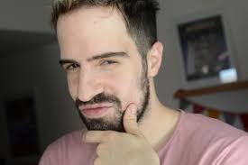

Gustavo Mariano Martín Frattini,[1] más conocido como Martín Cirio o La Faraona (Buenos Aires, 13 de junio de 1984), es un youtuber, streamer, docente de inglés, autor y cantante argentino. Cirio es su apellido materno.
Luego de una controversia ocurrida en el año 2020 donde terminó procesado por pedofilia, pasó por una etapa de caída en su popularidad, lo que lo llevó a dejar su personaje de La Faraona y, tras un tiempo de estar alejado de las redes, regresó con contenido humorístico, entrevistas, reacciones y videos sobre su vida personal. Recuperó su popularidad y seguidores, fue absuelto por la Justicia en 2023 y, según indica, fue víctima de la «cancelación»
